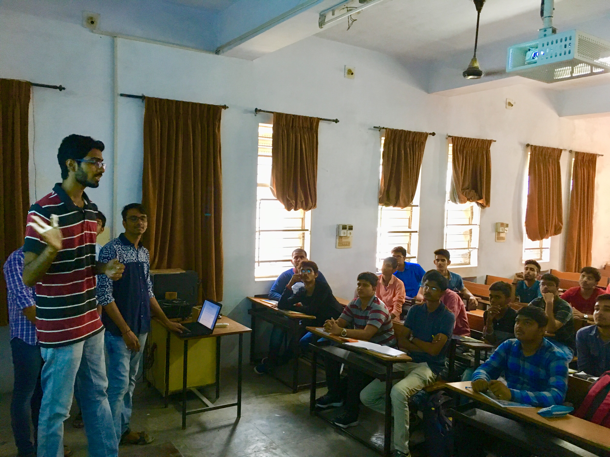
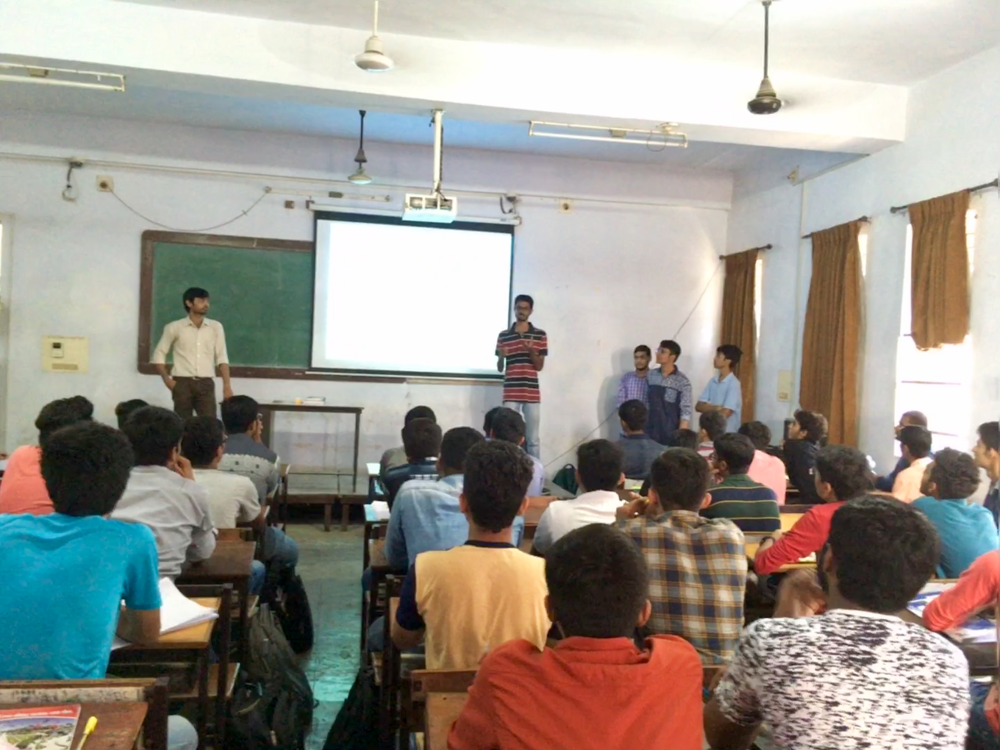
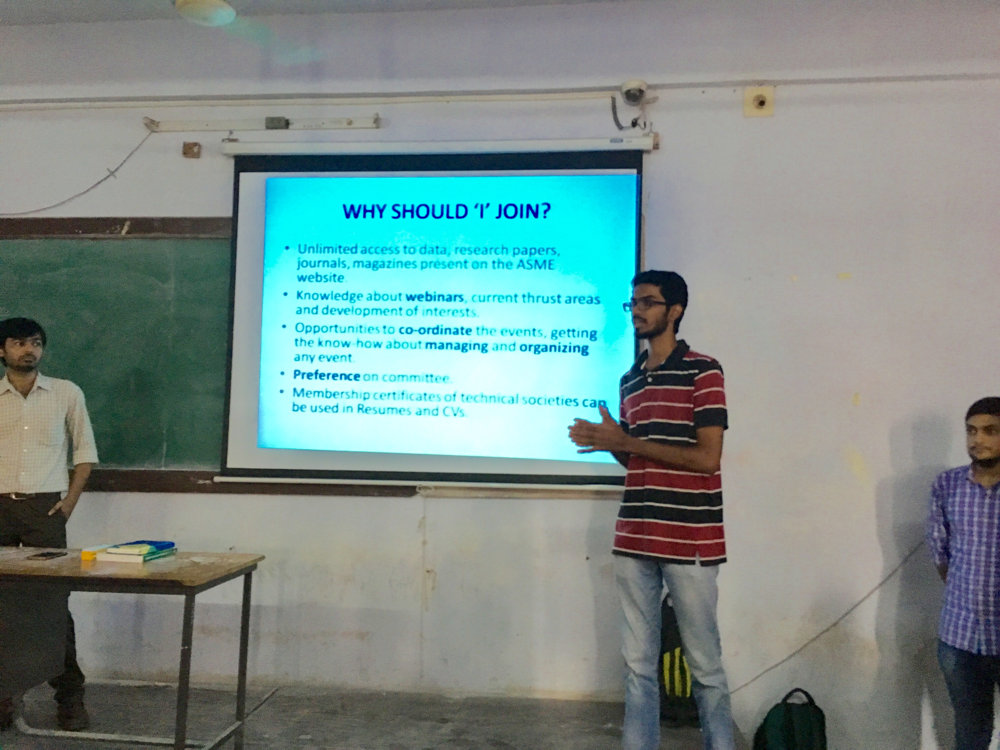

ASME is an internationally renowned organization known for setting codes and standards for mechanical devices. It is a not-for-profit membership organization that enables collaboration, knowledge, sharing, career enrichment, and skills development across all engineering disciplines, toward a goal of helping the community develop solutions to benefit lives and livelihoods. From college students to project managers, corporate executives, researchers and academic leaders, ASME’s members are as diverse as the engineering community itself. ASME serves wide-ranging technical community through quality programs in continuing education, training and professional development, codes and standards, research, conferences and publications, government relations and other forms of outreach.ASME has over 130,000 members in over 150 countries. ASME standards are used in 100 countries.
The seniors also reminisce the old memories when ASME was founded by the efforts of the Head of Department, Prof.(Dr.) Darshak Desai, our faculty advisor, Prof.(Dr.) Hemant Thakkar and fellow students
The GCET American Society of Mechanical Engineers Student chapter was started on 2nd August 2012 by our own Harsheel Panchsaara. The sole purpose of this chapter is to give the budding engineers of G.H Patel College of Engineering and Technology a platform for their technical as well as mental development. On 2nd August 2012 with the initial support from Gaardi ASME Student Section, Rajkot and the support of Dr. Darshak Desai, Head of Mechanical Department and our Dr. Hemant Thakkar, faculty advisor of ASME Student Chapter, we are able to successfully establish a ASME Student Chapter.
We conducted our workshops at the 2017- Mechanical and Mechatronics batches on 4th September 2017. Our Member Development Head Mandar Kesarker gave the talk about what ASME is, how it benefits us students and how to utilise the ASME membership
  